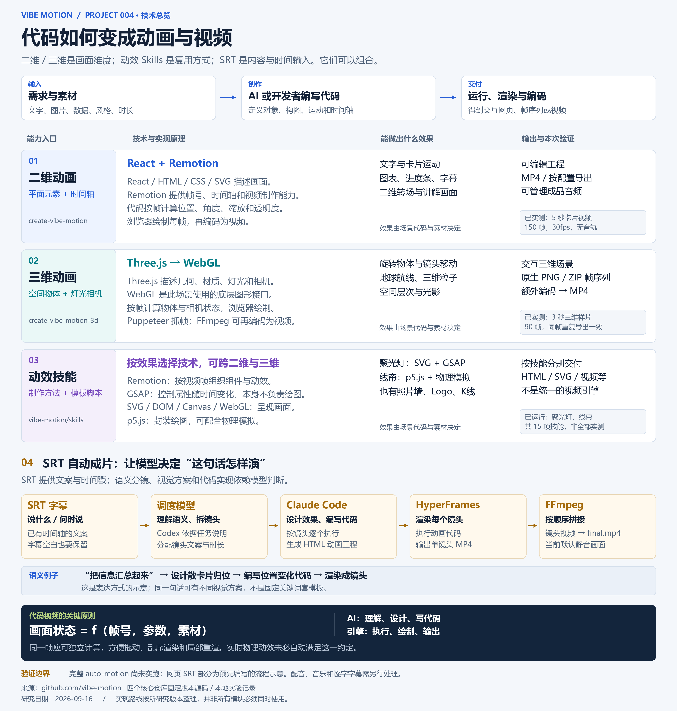

改文案，也能改节奏
参数决定内容与运动；更复杂的构图和转场需要修改场景代码。
PROJECT 004 · VIBE MOTION
把需求交给 AI，将创意写成代码，再交给动画引擎渲染。文案、节奏和场景可以继续修改，同一套设计也能用于一系列内容。
Vibe Motion 是一组脚手架、动画技能与制作流程。它把模型的语义理解能力，与 Remotion、Three.js 等工具的绘制和渲染能力连接起来。
已实测二维、三维及两项动效；SRT 展示为预设分镜示意，完整 AI 自动成片尚未实测。表达质量仍需审片。
体验四类能力 ↓
二维和三维描述画面维度；动效技能提供制作方法；SRT 提供文案与时间戳。
参数决定内容与运动；更复杂的构图和转场需要修改场景代码。
脚手架有音轨起点、时长和音量管理；这个样片仅展示画面。
此版本默认参数限制宽度和时长。扩大范围需调整模板，不是引擎上限。
SRT 提供“说什么、何时说”。模型负责拆镜头、选择视觉表达和编写动画代码，渲染工具再输出视频。
先把分散的信息汇总起来。
本工作流从 SRT 开始，不负责把原始声音识别为字幕。字幕间的停顿也需要保留。
镜头如何合并、用什么视觉隐喻、怎样实现，都需要模型判断。结果仍需审片。
1080×1440、30fps。配音、音乐和逐字字幕需另行处理；现有测试也不保证长片质量。